전자계산기제어산업기사(구) (2005-05-29 기출문제)
1과목: 프로그래밍일반
1. A+(B*C) 를 PREFIX로 표현한 것은?
- +A*BC
- ABC*+
- +*ABC
- CBA*+
(정답률: 알수없음)

2. 동적 형(TYPE) 검사의 장점은?
- 실행되지 않는 경로 검사를 하지 않아 효율적이다.
- 프로그램 설계에 융통성이 있다.
- 형 정보유지를 위한 추가 저장소가 불필요하다.
- 하드웨어에 의해 구현 가능한 부분이 있다.
(정답률: 알수없음)
3. 프로그램에서 하나의 값을 저장할 수 있는 기억 장소의 이름을 의미하는 것은?
- 상수
- 변수
- 주석
- 라이브러리
(정답률: 알수없음)
4. BNF 심볼에서 정의를 나타내는 것은?
- ::=
- ＜＞
- I
- --＞
(정답률: 알수없음)
5. C 언어에서 연산자 우선 순위가 옳은 것은? (단, 오른쪽 마지막 연산자가 가장 높은 우선 순위를 가짐.)
- +=, &, ==, ＜＜, +, *, ++
- +=, ＜＜, &, ==, +, *, ++
- +=, ==, &, ＜＜, +, *, ++
- +=, &, ==, +, *, ＜＜, ++
(정답률: 알수없음)
6. 고급 언어로 작성된 프로그램을 구문 분석하여 그 문장의 구조를 트리로 표현한 것으로 루트, 중간, 단말 노드로 구성되는 트리는?
- 구문 트리
- 파스 트리
- 어휘 트리
- 문법 트리
(정답률: 알수없음)
7. 절대로더의 기능별 행위 주체의 연결이 옳지 않은 것은?
- 기억 장소 할당-프로그래머
- 연결-로더
- 재배치-어셈블러
- 적재-로더
(정답률: 알수없음)
8. 다음의 C 언어 데이터 유형 가운데 가장 메모리를 많이 차지하는 것은?
- char
- int
- long
- double
(정답률: 알수없음)
9. 번역의 가장 기본적인 단계로 나열된 문자들을 기초적인 구성요소들인 식별자, 구분 문자, 연산기호, 핵심어, 주석 등으로 그룹화 하는 단계는?
- 어휘 분석
- 구문 분석
- 의미 분석
- 코드 생성
(정답률: 알수없음)
10. 가상 기억 장치 관리기법 중 각 페이지당 두 개의 하드웨어 비트를 두어서 가장 최근에 사용하지 않은 페이지를 교체하는 기법은?
- FIFO
- OPT
- LRU
- NUR
(정답률: 알수없음)
11. 시간 구역성의 예가 아닌 것은?
- 배열 순례(array traversal)
- 순환(looping)
- 부프로그램(subprogram)
- 집계(totaling) 등에 사용되는 변수
(정답률: 알수없음)
12. C 언어에서 데이터 형식을 규정하는 서술자에 대한 설명으로 옳지 않은 것은?
- %d : 10진 정수
- %c : 문자
- %s : 문자열
- %f : 16진 정수
(정답률: 알수없음)
13. 수학적 수식이 "A+B"로 표현된 표기법은?
- PREFIX
- INFIX
- SUFFIX
- POSTFIX
(정답률: 알수없음)
14. 부동소수점(floating point) 연산에 대한 설명으로 옳지 않은 것은?
- 고정소수점(fixed point) 연산에 비해 연산절차는 단순하다.
- 매우 큰 수나 작은 수를 계산하기에 편리하다.
- 고정소수점(fixed point) 연산에 비해 시간이 많이 걸린다.
- 정규화(normalization) 과정이 필요하다.
(정답률: 알수없음)
15. C 언어에서 사용되는 관계 연산자 중 "A와 B가 같지 않다"의 의미를 갖는 것은?
- A = ＞ B
- A ! = B
- A ＜ = B
- A ＜＞ B
(정답률: 알수없음)
16. 정적 바인딩에 해당하지 않는 것은?
- 실행시간
- 번역시간
- 언어구현 시간
- 언어정의 시간
(정답률: 알수없음)
17. 상향식(bottom-up) 파서에 해당하는 것은?
- Predictive parser
- LL parser
- Recursive descent parser
- Shift reduce parser
(정답률: 알수없음)
18. 문장이나 식과 같은 구문적인 단위의 시작과 끝을 나타내기 위하여 사용되는 구문적 요소는?
- 주석
- 리스트
- 연산자
- 구분 문자
(정답률: 알수없음)
19. 모듈화된 기억장치의 주소를 한개의 기억장치에만 집중시키지 않고 여러 기억장치의 모듈에 분산시켜서 처리능력을 향상시키는 방식은?
- 인터페이스(interface)
- 인터리빙(interleaving)
- 인터럽트(interrupt)
- 스래싱(thrashing)
(정답률: 알수없음)
20. 운영체제의 성능 평가 항목으로 거리가 먼 것은?
- 비용
- 처리 능력
- 반환 시간
- 사용 가능도
(정답률: 알수없음)
2과목: 전자계산기구조
21. 명령어 형식 가운데 모든 명령어의 처리가 누산기에 의해 이루어지는 명령어 형식은?
- zero-address instruction
- one-address instruction
- two-address instruction
- three-address instruction
(정답률: 알수없음)
22. 다음에서 수치 자료에 대한 부동 소수점 표현(floating point representation)의 특징이 아닌 것은?
- 고정 소수점 표현보다 표현의 정밀도를 높일 수있다.
- 아주 작은 수와 아주 큰 수의 표현에는 부적합하다.
- 수 표현에 필요한 자리수에 있어서 효율적이다.
- 과학이나 공학 또는 수학적인 응용에 주로 사용되는 수 표현이다.
(정답률: 알수없음)
23. 다음 중 조합 논리 회로는?
- 멀티플렉서
- 레지스터
- 카운터
- RAM
(정답률: 알수없음)
24. 소프트웨어적으로 우선순위가 높은 인터럽트를 알아내는 방법은?
- 점프(jump)
- 폴링(polling)
- 인터럽트 벡터
- 데이지 체인(daisy chain)
(정답률: 알수없음)
25. 컴퓨터 제어장치의 기능이 아닌 것은?
- interrupt의 발생
- 입Χ출력 장치의 제어
- 산술논리 연산의 실행 지시
- 주기억장치에 data의 Read 와 Write
(정답률: 알수없음)
26. 메모리 인터리빙(interleaving) 방법의 사용 목적이 되는 것은?
- 메모리 액세스의 효율 증대
- 기억 용량의 증대
- 입ㆍ출력 장치의 증설
- 전력 소모 감소
(정답률: 알수없음)
27. 명령 코드의 비트는 번지 필드(field)를 가지고 있다. 이 번지 필드의 기능은?
- 누산기를 지정한다.
- 오퍼랜드를 선택할 수 있다.
- 레지스터를 지정할 수 있다.
- 수행할 동작을 명시할 수 있다.
(정답률: 알수없음)
28. 계산 도중 연산장치에서 계산된 중간 결과를 보존하는 곳은?
- address register
- accumulator
- parallel adder
- instruction register
(정답률: 알수없음)
29. 주기억장치의 제한된 용량을 극복하기 위한 기술로서 하드디스크가 주기억장치인 것처럼 사용하는 메모리는?
- Volatile Memory
- Cache Memory
- Virtual Memory
- Associative Memory
(정답률: 알수없음)
30. Compiler Language나 Assembly Language로 작성된 프로그램을 지칭할 때 옳은 것은?
- Assembler
- Object Program
- Source Program
- Operating System Program
(정답률: 알수없음)
31. 인터럽트를 요청한 I/O 장치가 자신의 서비스 루틴이 어디에 있는가 하는 정보를 가르쳐 주는 인터럽트는?
- I/O 인터럽트
- Nonvectored 인터럽트
- Vectored 인터럽트
- 소프트웨어 인터럽트
(정답률: 알수없음)
32. binary 연산을 표시하는 것은?
- Complement
- shift
- AND
- Rotate
(정답률: 알수없음)
33. 패리티 비트의 최대 오차 검출 능력은?
- 1개
- 2개
- 5개
- 8개
(정답률: 알수없음)
34. A=01010101, B=10101010 일때 A와 B의 불곱(boolean product)은?
- 00000000
- 01010101
- 10101010
- 11111111
(정답률: 알수없음)
35. 2진수 0.101을 십진수로 나타내면?
- 0.2
- 0.35
- 0.5
- 0.625
(정답률: 알수없음)
36. 명령어 사이클(Instruction Cycle)이 아닌 것은?
- Fetch Cycle
- Control Cycle
- Indirect Cycle
- Interrupt Cycle
(정답률: 알수없음)
37. 다음 보기의 ( )안에 알맞은 말을 순서대로 옳게 나열한 것은?
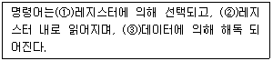
- ①디코더 ②주소 ③누산기
- ①명령어 ②디코더 ③시퀀스
- ①명령어 ②누산기 ③주소
- ①시퀀스 ②주소 ③디코더
(정답률: 알수없음)
38. 다음 Karnaugh 도표를 간략화 하면?
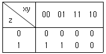
- xz
- xzy
- x+y+z
- xy+y
(정답률: 알수없음)
39. 어떤 명령(Instruction)이 수행되기 위해 가장 우선적으로 이루어져야 하는 마이크로 오퍼레이션은?
- MBR の PC
- PC の PC+1
- IR の MBR
- MAR の PC
(정답률: 알수없음)
40. 인스트럭션 세트의 효율성을 높이기 위하여 고려해야 할 사항이 아닌 것은?
- 기억공간
- 사용빈도
- 레지스터의 종류
- 주기억장치 밴드 폭
(정답률: 알수없음)
3과목: 마이크로전자계산기
41. CAM(Content Addressable Memory)에 관한 설명으로 옳지 않은 것은?
- 주소의 개념이 없는 메모리로 기억된 내용의 일부를 이용하여 자료에 접근하는 메모리이다.
- 병렬판독회로가 추가되어야 함으로 하드웨어 비용이 크다.
- 가상기억 장치의 어드레스 탐색에 이용된다.
- 대표적인 DRO(Destructive Read Out) 메모리이다.
(정답률: 알수없음)
42. 인터럽트 발생 요인이 아닌 것은?
- 정전
- 서브루틴 콜
- 입ㆍ출력
- 에러(error)의 발생
(정답률: 알수없음)
43. 다음의 회로가 나타내는 것은?
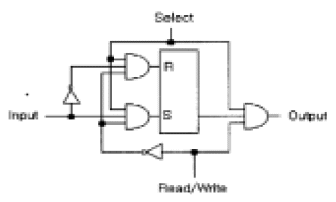
- Memory Cell
- ROM(Read Only Memory)
- PLA(Programmable Logic Array)
- Magnetic Core
(정답률: 알수없음)
44. 서브루틴(subroutine) 분기시 저장(save)되는 내용이 아닌것은?
- 프로그램 카운터의 내용
- CPU 레지스터의 내용
- 스택 메모리의 내용
- 상태 조건의 내용
(정답률: 알수없음)
45. 회로도 등의 도형을 그리기 위한 입력 장치로 적합한 것은?
- 키보드
- 라이트 펜
- 플로터
- 디지타이저
(정답률: 알수없음)
46. 자료자신이라고 불리는 주소지정 방식으로 명령의 operand 부분에 실제 데이터가 기록되어 있어 메모리 참조를 하지 않고 데이터를 처리하는 방식은?
- implied addressing mode
- indexed addressing mode
- relative addressing mode
- immediate addressing mode
(정답률: 알수없음)
47. MODEM 이란?
- 변조장치
- 복조장치
- 변조 및 복조장치
- 동기장치
(정답률: 알수없음)
48. 처리 프로그램과 관계가 먼 것은?
- Editor
- Loader
- Monitor
- Assembler
(정답률: 알수없음)
49. 65,536워드(word)의 메모리를 갖는 컴퓨터가 있다. 프로그램 카운터(PC)의 비트 수는?
- 64
- 32
- 16
- 8
(정답률: 알수없음)
50. 하나의 프로세스를 서로 다른 기능을 가진 여러개의 subprocess로 나누어 각 subprocess가 동시에 서로 다른 데이터를 취급하도록 하는 기법은?
- firmware
- pipeline processing
- parallel processing
- bit-sliced processing
(정답률: 알수없음)
51. 기억장치에서 번지가 지정된 내용은 어느 버스를 통해 CPU로 가는가?
- 제어 버스
- 데이터 버스
- address 버스
- I/O 포트 버스
(정답률: 알수없음)
52. CPU의 상태를 프로그램에 의해 알수가 있는데 이를 무엇이라고 하는가?
- Indirect addressing
- Fetch
- Status flag
- Parity
(정답률: 알수없음)
53. 인스트럭션을 읽은 후 이를 해석해 각각의 인스트럭션에 해당하는 일을 수행토록 하는 회로는?
- 연산회로
- 제어회로
- 레지스터
- 인터페이스
(정답률: 알수없음)
54. 2진수 10011000의 2의 보수(2'S complement)는?
- 01100111
- 10011001
- 01101000
- 10010001
(정답률: 알수없음)
55. 특정의 비트를 삭제하기 위하여 사용되는 연산은?
- OR 연산
- AND 연산
- 보수 연산
- MOVE 연산
(정답률: 알수없음)
56. 인터럽트가 받아들여 졌을때 프로그램 카운터(PC)에 적재되는 값을 무엇이라 하는가?
- Interrupt Flag
- Interrupt vector
- Interrupt Priority
- Interrupt service routine
(정답률: 알수없음)
57. 마이크로 컴퓨터를 제어하기 위한 방법으로는 고정 배선제어 방법과 마이크로 프로그램 제어 방식이 있다. 이에 대한 설명으로 옳지 않은 것은?
- 마이크로 오퍼레이션의 수행에 필요한 제어기능을 마이크로프로그램으로 작성하여 특정 메모리에 기억시켜 제어하는 방식을 마이크로프로그램 제어방식이라 한다.
- 마이크로프로그램 제어방식은 사용하는 Logic이 규칙적이므로 LSI화에 적합하다.
- 마이크로프로그램 제어방식은 기능의 추가, 변경시 Control Storage에 기억된 Program의 수정만으로 가능하다.
- 마이크로프로그램 제어방식은 고정 배선 제어에 비해 고속의 제어가 가능하지만 융통성이 부족해 개발 수정이 용이하지 못하다.
(정답률: 알수없음)
58. 시스템 소프트웨어의 설명으로 옳지 않은 것은?
- 다른 프로그램의 실행을 제어한다.
- 하드웨어를 보다 효율적으로 이용할 수 있도록 도와준다.
- 컴퓨터가 특정한 업무 처리를 하기 위하여 개발된 프로그램이다.
- 운영체제, 어셈블러, 컴파일러, 라이브러리 등이 있다.
(정답률: 알수없음)
59. 컴퓨터가 어떤 프로그램을 수행 중 인터럽트 요구가 발생하면 가장 먼저 취하는 동작은?
- 컴퓨터는 Help Sign을 보낸다.
- 모든 동작을 일시에 중지한다.
- 즉시 인터럽트 서비스 루틴으로 Jump 한다.
- 현재의 수행 중인 명령을 끝내고, 현재 상태를 보관한다.
(정답률: 알수없음)
60. 다음은 static RAM에 관한 설명이다.가장 옳지 않은 것은?
- refresh 회로가 필요 없다.
- 메모리 집적도가 Dynamic RAM보다 높다.
- 전원이 공급되는 동안에는 내용을 유지한다.
- 속도가 Dynamic RAM보다 빠르다.
(정답률: 알수없음)
4과목: 논리회로
61. 다음의 단순화된 불 함수는?
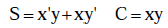
- 반가산기
- 전가산기
- 인코더
- 감산기
(정답률: 알수없음)
62. 다음 회로의 기능은?
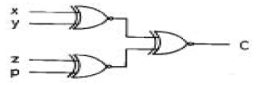
- 4비트 가산기
- 4비트 크기 비교기
- 4비트 홀수 패리티 체커(CHECKER)
- 4비트 짝수 패리티 체커(CHECKER)
(정답률: 알수없음)
63. 아래 조합논리회로의 명칭은?
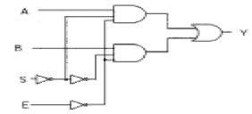
- 2×1 decoder
- 2×1 multiplexer
- 4×1 encoder
- 2×1 demultiplexer
(정답률: 알수없음)
64. 용량이 1024 어(Word)인 기억 시스템에서 2진수로 된 번지(Address) 어는 몇 비트가 되어야 하는가?
- 5
- 10
- 15
- 20
(정답률: 알수없음)
65. 2진 코드 1111을 그레이(Gray Code) 코드로 변환하면?
- 1111
- 1000
- 0000
- 1001
(정답률: 알수없음)
66. 다음 표는 J-K 플립플롭의 여기표(excitation table)이다. A, B, C, D는 각 각 어떻게 표시되는가? (단, d는 무정의 조건(don't care condition)이다.)
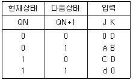
- A=0, B=d, C=d, D=0
- A=1, B=1, C=d, D=d
- A=1, B=d, C=d, D=1
- A=d, B=1, C=1, D=d
(정답률: 알수없음)
67. 다음과 같은 논리 회로의 출력 Y는?
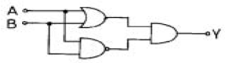
- AB+AB
- (A+B)AB
- AB(A+B)
- (A+B)(A+B)
(정답률: 알수없음)
68. 다음과 같은 회로의 출력은?
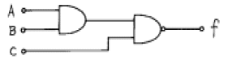
- A+BC
- AB+C
- ABC
- A+B+C
(정답률: 알수없음)
69. Toggling 상태를 이용한 플립-플롭 형태는?
- RS 플립-플롭
- D 플립-플롭
- JK 플립-플롭
- T 플립-플롭
(정답률: 알수없음)
70. 5bit 2진(binary) 카운터가 00000 상태에서 계수를 시작한다고 가정하면 144개의 펄스가 입력된 후 계수 상태는 어떤 상태인가?
- (00000)2
- (11111)2
- (10000)2
- (00001)2
(정답률: 알수없음)
71. 입력이 모두 0(low)일 때만 출력이 1(high)로 나오는 게이트는?
- AND 게이트
- NAND 게이트
- OR 게이트
- NOR 게이트
(정답률: 알수없음)
72. BCD counter가 0111 상태에 있다. counter가 reset 된 후 몇 개의 pulse가 공급되었는가?
- 3
- 6
- 7
- 12
(정답률: 알수없음)
73. 멀티플렉서 64개의 입력을 제어하기 위해 몇 개의 선택선이 필요한가?
- 4
- 6
- 16
- 32
(정답률: 알수없음)
74. Shift Counter Code(Johnson Code)는 몇 개의 비트를 사용하는가?
- 4
- 5
- 6
- 8
(정답률: 알수없음)
75. 8진수 224를 2진수로 변환하면?
- 010010100
- 010010101
- 010010110
- 010010111
(정답률: 알수없음)
76. 10진수 22를 3초과 코드(Execss-3 code)로 변환한 것은?
- 0101 0101
- 1011 1100
- 0011 1011
- 1100 1100
(정답률: 알수없음)
77. 아래 게이트 회로의 명칭은?
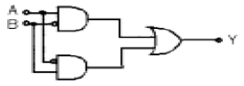
- EXCLUSIVE-OR
- AND
- NOR
- NAND
(정답률: 알수없음)
78. RS-플립플롭의 동작 상태 중 옳지 않은 것은?
- S=0, R=0 이면 전상태 유지
- S=0, R=1 이면 리셋
- S=1, R=0 이면 셋
- S=1, R=1 이면 리셋
(정답률: 알수없음)
79. 다음 회로의 기능은?
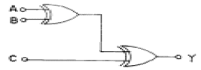
- 반가산기 회로
- 병렬 2진 가산 회로
- 3비트의 합(SUM)을 구하는 회로
- 전가산기 회로
(정답률: 알수없음)
80. 3×8 디코더를 설계할 때 몇 개의 AND 게이트가 필요한가?
- 2
- 4
- 8
- 16
(정답률: 알수없음)
5과목: 정보통신개론
81. 사용자의 데이터 단말기(DTE)가 패킷 교환 네트워크에 접속하고자 할 때 따르는 규정을 정의한 프로토콜은?
- X.21
- X.25
- HDLC
- RS-232C
(정답률: 알수없음)
82. 다음 중 서로 관련성이 먼 것은?
- ENIAC - 최초의 컴퓨터
- SAGE - 상업용 위성통신 시스템
- SABRE - 항공기 좌석예약 응용
- ALOHANET - 최초의 패킷 무선망
(정답률: 알수없음)
83. 정보통신시스템의 통신회선 종단에 위치한 신호변환장치 중 디지털 전송로에서 단극성 신호를 쌍극성 신호로 변환이 가능한 장치는?
- 지능 모뎀
- 음향결합기
- 코덱
- 디지털 서비스 유니트
(정답률: 알수없음)
84. 다음 중 발신가입자로부터 수신자까지의 모든 전송, 교환 과정이 디지털방식으로 처리되며, 음성과 비음성, 영상 등의 서비스를 종합적으로 처리하는 통신망은?
- PSDN
- VAN
- ISDN
- PSTN
(정답률: 알수없음)
85. 다음 중 브로드밴드의 변조방식이 아닌 것은?
- ASK
- QAM
- FSK
- PCM
(정답률: 알수없음)
86. TV 신호의 주사선 틈을 이용해서 문자나 도형정보를 방송 하고 시청자들이 단말기, 어댑터 등의 장치를 이용해서 TV 화면으로 그 내용을 시청할 수 있도록 하는 서비스는?
- 텔리텍스트
- 비디오텍스
- CATV
- HDTV
(정답률: 알수없음)
87. 데이터교환방식 중에서 128[byte] 혹은 256[byte] 등 일정 길이의 전송단위로 정보를 나누어 전송하는 것은?
- 회선교환
- 메시지교환
- 패킷교환
- 축적교환
(정답률: 알수없음)
88. 전진오류수정(Forward Error Correction)의 특징으로 잘못된 것은?
- 역채널이 필요하다.
- 연속적인 데이터의 흐름이 가능하다.
- ARQ에 비해 기기와 코딩이 더복잡하다.
- 잉여비트들이 데이터시스템 효율의 개선을 저해한다.
(정답률: 알수없음)
89. 다음 중 통신제어장치의 역할은?
- 데이터 전송의 특성을 변조시킨다.
- 통신회선을 통하여 송·수신되는 과정을 제어하고 감시한다.
- 수신신호에서 아이 패턴을 복조한다.
- 통신회선을 거쳐온 전송신호를 데이터로 변환시킨다.
(정답률: 알수없음)
90. 다음 중 데이터 통신에 의한 실시간 처리 형태로 가장 적합한 것은?
- 오프라인 처리
- 온라인 배치 처리
- 온라인 리얼타임 처리
- 오프라인 리얼타임 처리
(정답률: 알수없음)
91. 정보에 대하여 가장 적합하게 설명한 것은?
- 인간 또는 기계가 감지할 수 있도록 숫자, 문자, 기호 등으로 형식화한 것이다.
- 멀리 떨어져 있는 입·출력장치와 컴퓨터가 서로주고 받는 것이다.
- 여러가지 데이터를 처리 후, 특정 목적 수행을 위하여 체계화한 것이다.
- 기계와 기계 사이에 전달되는 일체의 기호이다.
(정답률: 알수없음)
92. 동기식 전송방식 중 비트지향성(bit oriented) 방식의 프로토콜이 아닌 것은?
- HDLC
- ADCCP
- BSC
- SDLC
(정답률: 알수없음)
93. ISDN 채널의 종류와 전송속도의 관계가 잘못된 것은?
- B채널 : 16[kbps]
- D채널 : 64/16[kbps]
- Ho채널 : 384[kbps]
- H11채널 : 1536[Kbps]
(정답률: 알수없음)
94. LAN의 특성에 대한 설명 중 틀린 것은?
- 음성, 데이터, 화상정보를 전송할 수 있다.
- LAN 프로토콜은 OSI 참조모델의 상위층에 해당된다.
- 전송방식으로 베이스밴드와 브로드밴드 방식이 있다.
- 광케이블 및 동축케이블도 사용 가능하다.
(정답률: 알수없음)
95. 데이터 전송시 에러검출용으로 사용되는 것은?
- 플래그(Flag) 비트
- 패리티 체크(Parity Check) 비트
- 시프트(Shift) 비트
- 시작 및 정지비트
(정답률: 알수없음)
96. 다음 중 정보통신 관련 국제적인 권고규정을 제정하는 국제전기통신연합의 약자는?
- NBS
- EIA
- ITU
- ITT
(정답률: 알수없음)
97. OSI 참조 모델 계층 가운데 암호화, 데이터압축, 코드변환 등의 기능을 수행하는 계층은?
- 응용계층
- 표현계층
- 세션계층
- 네트워크계층
(정답률: 알수없음)
98. 베이스밴드 전송방식에 해당되지 않는 것은?
- 단류 NRZ 방식
- 복류 NRZ 방식
- Bipolar 방식
- DSB 방식
(정답률: 알수없음)
99. 다음 중 반송파의 진폭과 위상을 상호변환하여 신호를 얻는 변조방식은?
- PSK
- ASK
- QAM
- FSK
(정답률: 알수없음)
100. 보오(Baud)속도가 3200 보오이며, 트리비트(Tri-bit)를 사용하는 경우 몇 bps가 되는가?
- 1200
- 2400
- 4800
- 9600
(정답률: 알수없음)